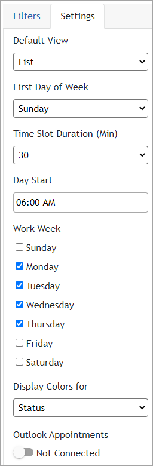
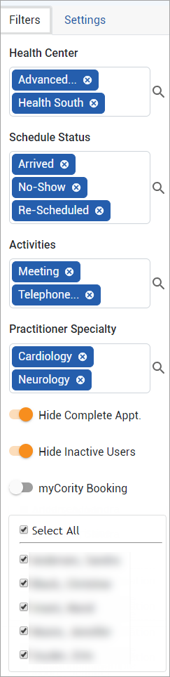

To define how the calendar view should be displayed, click « at the right of the Appointments tab to display the sidebar, and then click the Settings tab.

Select the Default View that will open each time you open the Appointments module, the First day of the week, Time Slot Duration (Min) and Day Start time.
The Time Slot Duration (Min) only affects the display — you can schedule an activity for any period of time.
The Work Week view defaults to Monday-Friday; if your work week is different, select the work days that should be displayed when you choose the Work Week view.
In the Display Colors for field, select the element that you want to color-code in your calendar: Status, Activity, User, or Health Center. If you choose Status, the colors configured in the ScheduleStatus look-up table will be used. For the other options, the colors used are automatically assigned.
You can view your Outlook appointments in the Appointments module if the appropriate system settings are configured (“Outlook Exchange server on-premises”, “Outlook Exchange Webservices URL” and “Synchronize Appointments from Outlook Exchange Server”). If you want to use OAuth 2.0 authentication, you must enable the "Enable OAuth 2.0 Authentication" system setting.
Similarly, you can integrate your Gmail email and calendar with the Appointments module if the following system settings are configured: "Gmail Client ID", "Gmail Client Secret" and "Synchronize Appointments from Gmail".
To view these appointments in the Appointments module, turn on the appropriate External Appointments connection toggle on the Settings tab (if both Outlook and Gmail system settings have been configured, there is a toggle for each; only one can be turned on at a time). The first time you connect you will be prompted to enter your credentials. Once connected, the Appointments view will display your external appointments with a grey background marked as "Google Appt" or "Outlook Appt" as applicable. Outlook appointments will also include a brief hover-over description. Your own external appointments will include the title, date, and time, but for privacy reasons external appointments belonging to other Scheduling users will display an unavailable timeslot but no details.
If you are not connected to Outlook/Gmail but the “Synchronize Appointments" system setting is selected, you will still receive responses to an emailed appointment in the Tracking Status Log (see Monitoring Email Notifications).
When connecting with an external calendar, the Appointments module could end up with a large number of entries. To avoid any resulting time lag or functionality issues due to entry overload, we recommend you display only a few Scheduling Users at a time.
At the right of the Appointments tab, click « to display the sidebar and then click the Filters tab.

The Health Center displays the Default Health Center defined in My Settings (see Changing Your System Settings). If no default is defined, this field is blank. Select one or more health center to view.
Filter appointments and to-dos to only display those that match the selected Health Center, Schedule Status (No Show, Cancellation, etc.), Activities and/or Practitioner Specialty. You can select multiple values for each (Practitioner Specialty must be specified in applicable User records to use this filter). The Health Center, Schedule Status and Activities are taken from the corresponding look-up tables; however, a business rule may be set up that will update an appointment’s schedule status based on a response from Microsoft Outlook. To only show incomplete appointments, turn on the Hide Complete Appt toggle.
Appointments are displayed in the color assigned to the schedule status in the ScheduleStatus look-up table. If there is no color selected for a particular schedule status, appointments with that status will display in blue-grey.
The Users list displays scheduling users associated with the selected health center(s) (on the linked health centers tab of the Users table). To only show active users, turn on the Hide Inactive Users toggle. Select the users whose appointments you want to view or add, or select All Scheduling Users.
View inactive users to check for any appointments that should be reassigned to an active user.
If no active Scheduling users are linked to any health centers, remove the health center filter to view all active Scheduling users in the list.
If multiple users are selected, each calendar view displays appointments for all selected users, but not their availability. To view appointments as well as availability, use the Master view.
If only one scheduling user is selected, all views except List view display both appointments as well as availability.
All filters that you apply are retained each time you open the Appointments module, until you change them again.